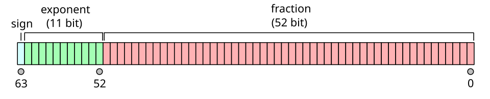

a + 0 = a, a + S(b) = S(a + b) a · 0 = 0, a · S(b) = a · b + a fl(x ∘ y) = (x ∘ y)(1 + δ), |δ| ≤ u = 2⁻⁵³
The first two lines are the entire definition of addition and multiplication of natural numbers; everything a schoolchild learns about carrying, borrowing and multiplication tables is a consequence of them together with the principle of induction. The third line is the fundamental model of arithmetic as it is actually performed by every computer on Earth: each operation is exact up to a relative error no larger than a fixed unit roundoff. Between these two poles lies the subject of this course.
Arithmetic is usually treated as the part of mathematics that is finished before mathematics begins. That view is mistaken in two directions. Looking down, the familiar laws (commutativity, associativity, distributivity, the rules of signs, the uniqueness of prime factorisation) are theorems, not conventions, and making their proofs precise was one of the great achievements of nineteenth-century foundations, through the work of Grassmann, Dedekind, Peano, Cantor and Weierstrass. Looking up, arithmetic becomes algebra (rings, ideals, Euclidean domains, quotient rings), analysis (the completion of ℚ to ℝ), numerical analysis (floating-point error and stability) and computational complexity (how fast two n-digit numbers can be multiplied, a question whose best known upper bound, O(n log n), was found only in 2019).
The course assumes familiarity with sets, functions, equivalence relations, proof by induction and the elementary language of groups and rings. All the material of the school course (order of operations, signed numbers, exponent laws, long division) is taken as known and is here re-derived from first principles.
In this course, you will:
- 1.Define the natural numbers by the Peano axioms and justify definitions by recursion
- 2.Prove the commutative, associative and distributive laws by induction
- 3.Construct ℤ and ℚ as sets of equivalence classes and verify the ordered-field axioms
- 4.Prove the division algorithm and study Euclidean domains, ℤ[i] and k[x]
- 5.Prove the fundamental theorem of arithmetic and see where unique factorisation fails
- 6.Develop modular arithmetic as the arithmetic of the quotient ring ℤ/nℤ
- 7.Prove the existence and uniqueness of positional representations in any base
- 8.Construct ℝ by Dedekind cuts and by Cauchy sequences and characterise it uniquely
- 9.Analyse IEEE 754 floating-point arithmetic, rounding error and catastrophic cancellation
- 10.Study the computational complexity of arithmetic, from Karatsuba to O(n log n) multiplication
Each lesson states its definitions and theorems precisely and proves them. Each lesson ends with short exercises, whose solutions can be revealed on the page; the sixty practice problems at the end range from routine verification to results found in research-level texts and are left for the reader to work.
Figures

Contents
The Peano Axioms and Definition by Recursion Lesson 2
The Laws of Arithmetic by Induction Lesson 3
Constructing the Integers Lesson 4
The Rationals and Ordered Fields Lesson 5
The Division Algorithm and Euclidean Domains Lesson 6
The Fundamental Theorem of Arithmetic Lesson 7
Modular Arithmetic and the Ring ℤ/nℤ Lesson 8
Positional Numeral Systems Lesson 9
The Real Numbers Lesson 10
Floating-Point Arithmetic and IEEE 754 Lesson 11
Rounding Error, Cancellation and Stability Lesson 12
The Computational Complexity of Arithmetic Problem Set
60 problems Assessment
Randomly generated questions
Image sources
- Figure 1 · Giuseppe Peano. By Unknown author. Public domain. From Wikimedia Commons: https://commons.wikimedia.org/wiki/File:Giuseppe_Peano.jpg
- Figure 2 · IEEE 754 Double Floating Point Format. By Codekaizen. CC BY-SA 4.0. From Wikimedia Commons: https://commons.wikimedia.org/wiki/File:IEEE_754_Double_Floating_Point_Format.svg